FINORAPersonal finance app
Everyday finance, clear enough to act on. - Personal Finance App UI/UX Case Study
Net worth, credit score, spending and payments in one app, with an AI coach that suggests the next step.
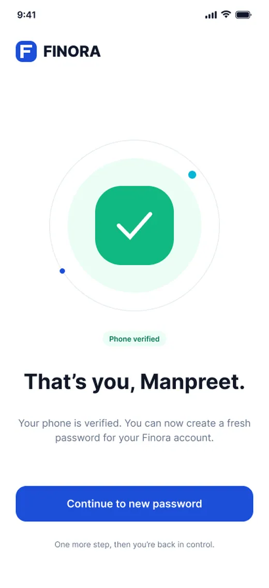

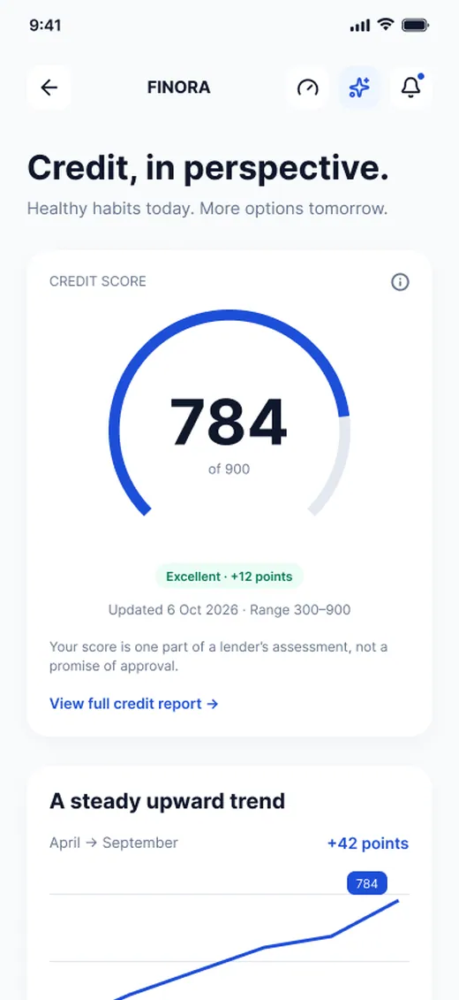
01Overview
Net worth, credit score, spending and payments in one app, with an AI coach that suggests the next step.
FINORA (Credwise) is a personal finance app for India: it shows net worth, credit score and spending, handles UPI payments and cards, and adds an AI coach that turns the numbers into a short list of actions. I designed the sign-in and account recovery flows, the core money screens and a design system specimen for the whole product.
02The challenge
What had to be solved
People open finance apps to answer simple questions: how am I doing, can I afford this, what should I fix? Most apps answer with dense tables and jargon, so users check once and stop coming back.
Design goals
- Lead every screen with one clear answer
- Explain credit and spending in plain words
- Make payments a two-tap job
- Keep sign-in and recovery secure without being stressful
03Process
How I approached it
- Write the questionsEach main screen was designed around one question: net worth, credit health, monthly spending, or what to do next.
- Plain-language copyHeadlines like "Credit, in perspective" and "See the story behind your spending" set the tone before the numbers.
- Secure, calm authSign-in, registration, OTP and password recovery each show their step and what happens next.
- System firstA specimen of colours, type, spacing and patterns keeps every screen consistent.
04Sign-up and sign-in
Secure without the stress.
Landing, login and registration are short and friendly. OTP verification and the success screens confirm each step, so users always know where they are.
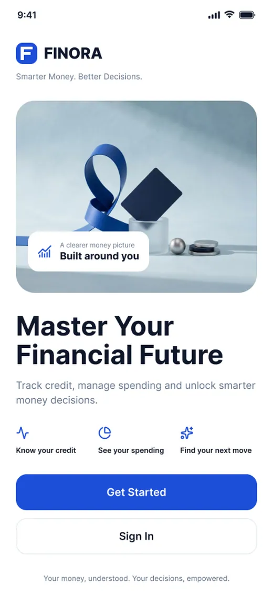
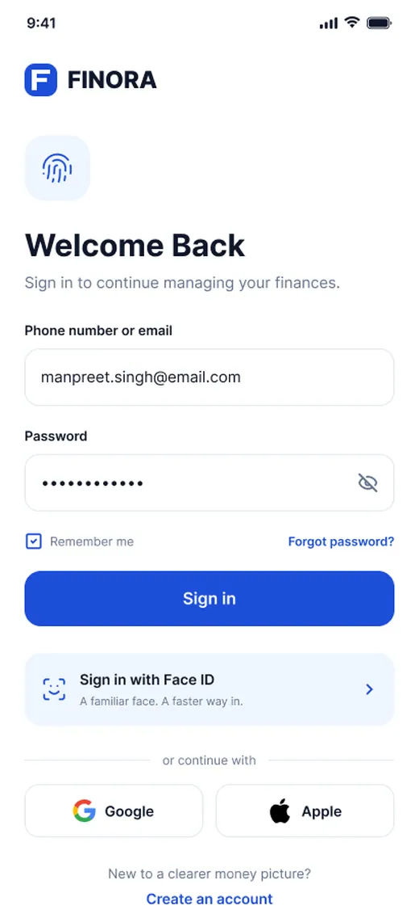
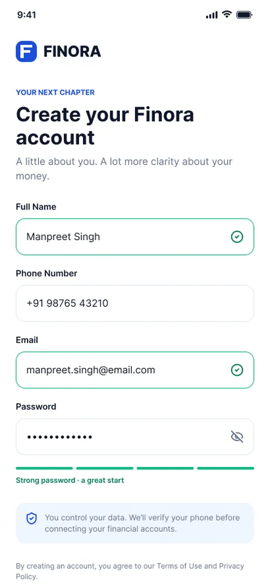
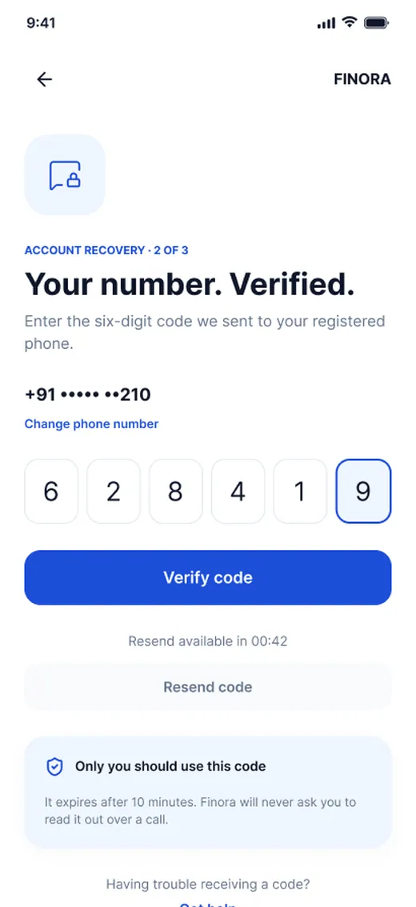
05Dashboard and credit score
Net worth and credit, in perspective.
The home dashboard leads with total net worth and a monthly trend. The credit score screen pairs the number with a range, recent change and plain-language guidance.
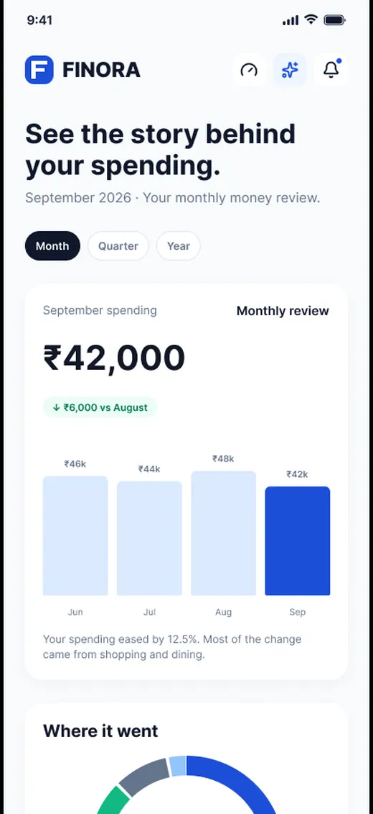
06AI financial coach and cards
From numbers to a next step.
The AI coach summarises the month and suggests three practical moves. Cards are shown as real cards with due dates and quick actions.
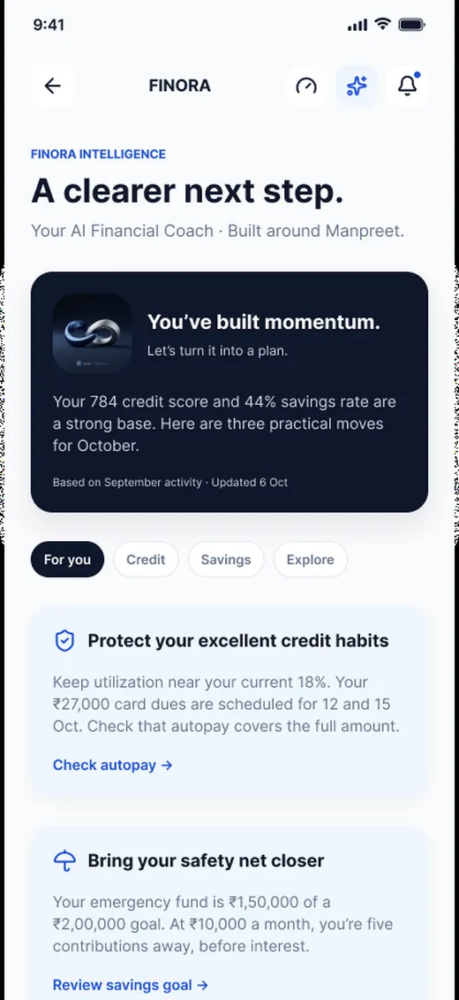
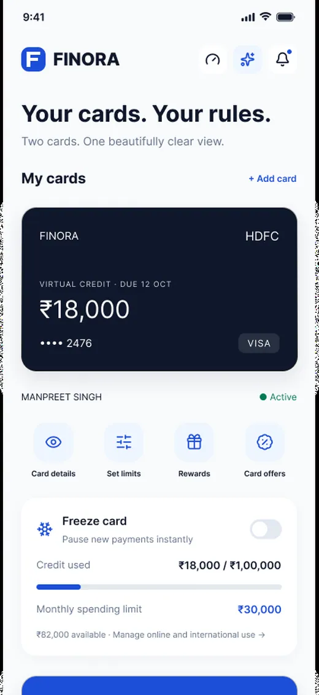
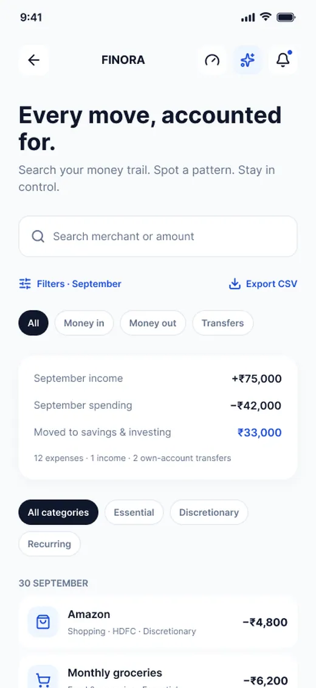
07Payments, alerts and profile
Move money simply.
UPI payments put Scan QR first, with send, request, bank transfer and balance check below. Notifications are filtered by type, and the profile shows completion progress.
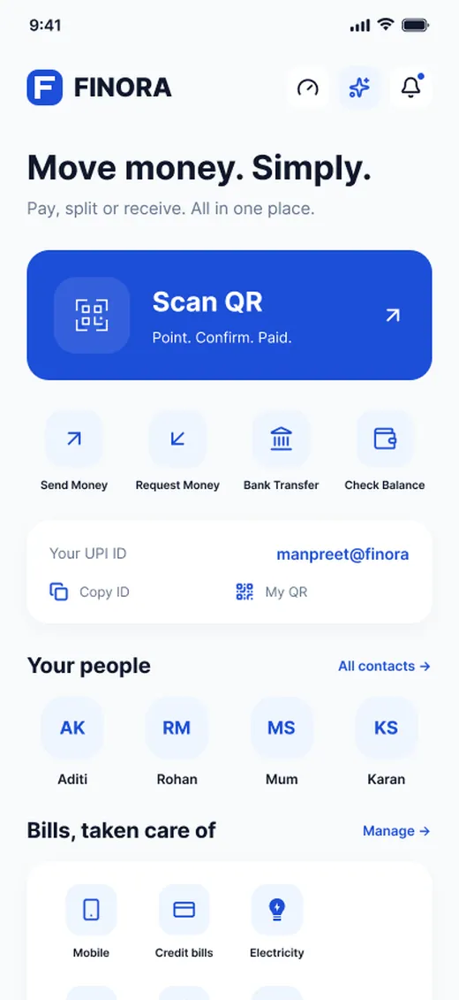
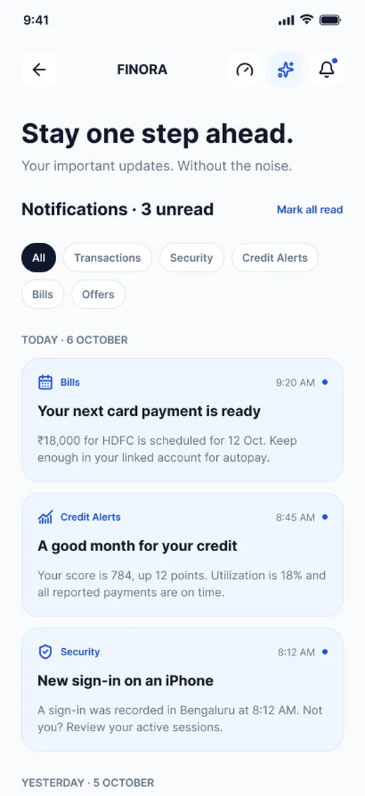
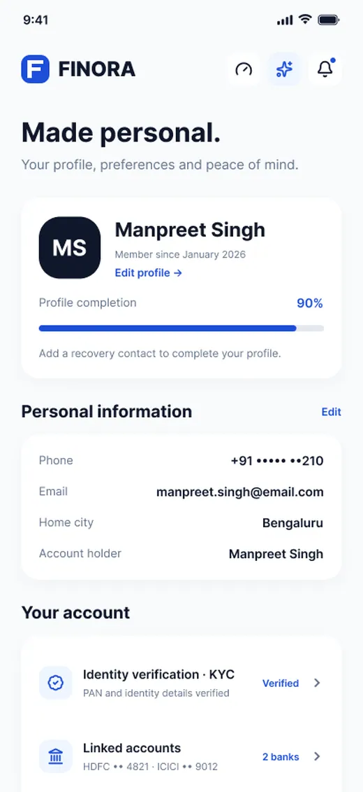
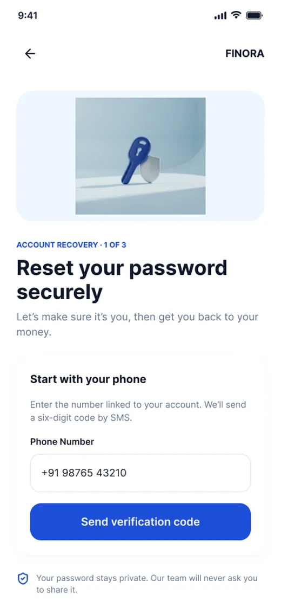
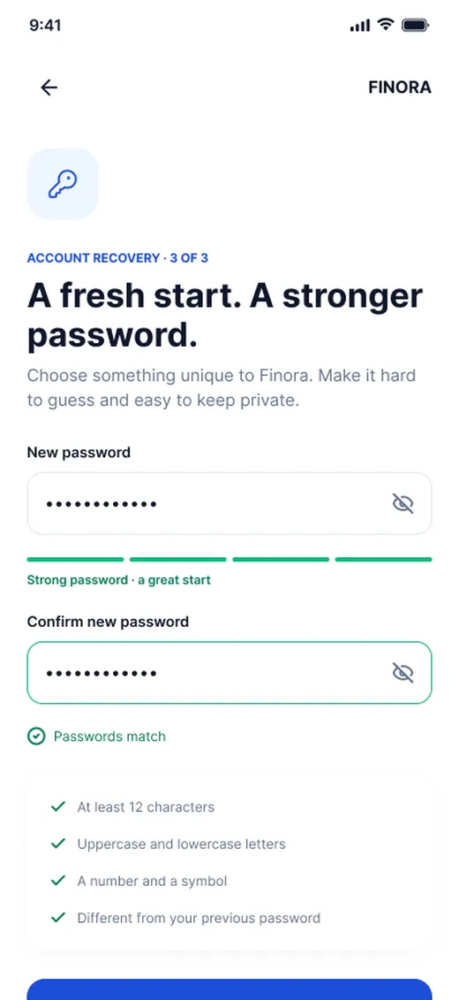
08Design system specimen
Clarity is the new premium.
One specimen page defines the palette, type scale, spacing and reusable patterns, so the product can grow without losing its calm look.
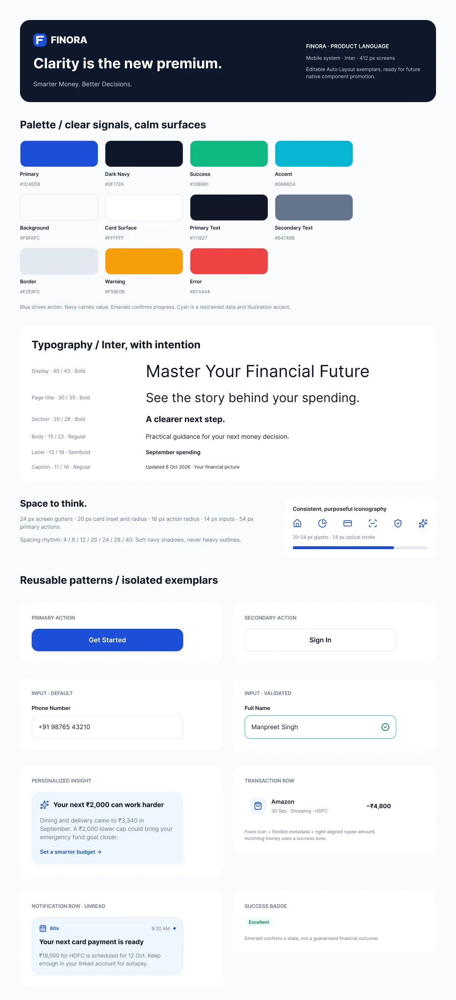
09Decisions
Key design decisions
Every screen opens with a one-line answer (your net worth, your score, your spend) and puts the breakdown underneath.
The AI coach frames advice as next steps based on the user's own data, never as warnings.
Most payments in India start with a QR code, so it gets the largest target on the payments screen.
10Design system
Visual language
Deep navy and royal blue for trust, white surfaces, green and amber for status. Large bold headlines with short supporting copy on every screen.
TypeInter, bold display headlines
11Outcome
What was delivered
FINORA turns a personal finance app into a set of clear answers: how much you have, how healthy your credit is, where the money went and what to do next. The recovery flow and design specimen make it ready for a development handoff.
If the project continues, next I would:
- Add budgets and savings goals
- Test AI coach suggestions with real users
- Design the bill payments flow
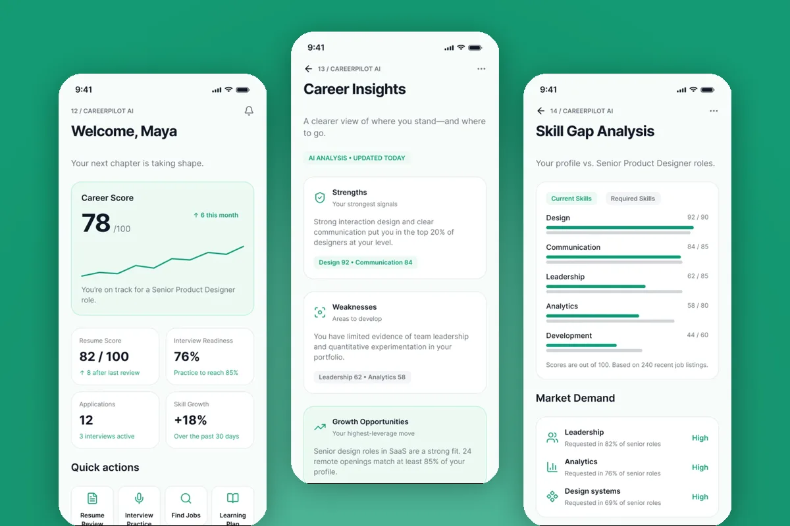